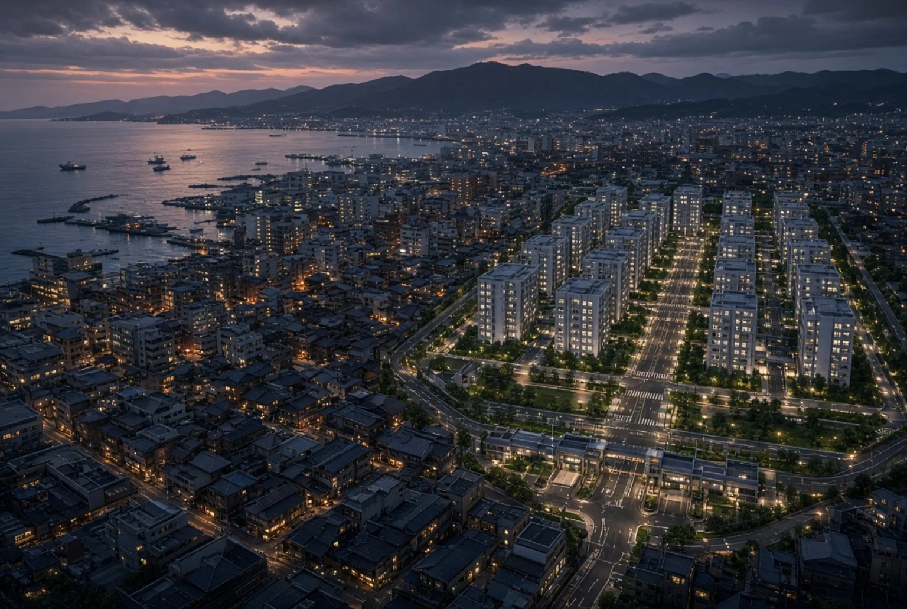

Location 01 / The City
Kuroshiro 黒城
A fictional Japanese coastal metropolis of crowded neighborhoods, harbors, old shopping streets and modern residential compounds. Its ordinary citizens live beyond the special classifications of Project Rebirth.

The contrast is visible from above: an exceptionally well-maintained enclave beside the older fabric of Kuroshiro.
Special Administration
The Black Zone
The Black Zone is a government-controlled district within Kuroshiro. Selected adult women enrolled in Project Rebirth reside in designated facilities, with monitored movement and access to services managed by the Directorate. Its polished appearance conceals an unequal system.
Explore Residential Facilities →